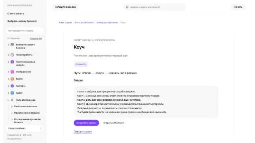

МолекулаАгрегаторы нейросетей
Молекула объединяет модели для текстов, изображений, видео и музыки. В одном аккаунте можно подобрать инструмент под этап работы, сохранить инструкции проекта и использовать готовые роли.
К задаче в МолекулеРаздел «Саморазвитие»: варианты ИИ для этой задачи, описания возможностей и переходы к обзорам. Сравните несколько решений на одинаковом примере.
Опишите цель освоения навыка, доступное время и текущие обязательства, чтобы выбрать ближайший шаг. Инструкция роли коуча помогает расставить приоритеты; план соотнесите с реальными ограничениями, не воспринимая текстовое предложение как гарантию достижения результата в срок.
Помоги выбрать первый шаг для изучения монтажа видео на этой неделе. Есть мои ограничения по времени и текущие задачи. Предложи приоритет и посильное действие без обещания быстро освоить весь навык.

Молекула объединяет модели для текстов, изображений, видео и музыки. В одном аккаунте можно подобрать инструмент под этап работы, сохранить инструкции проекта и использовать готовые роли.
К задаче в МолекулеСравнивать «Aistro» с другими инструментами раздела «Вдохновение» удобнее на одинаковом исходном материале.
«Inner Lighthouse» представлен в разделе «ИИ-ассистент». При выборе проверьте нужную операцию и условия работы с результатом.
«Lotus» представлен в разделе «Здоровье». При выборе проверьте нужную операцию и условия работы с результатом.
Для «Motiv8» сначала определите свою задачу и требуемый результат. Карточка относится к направлению «Личный помощник».
«Tiered» представлен в разделе «Нейрокоучи». При выборе проверьте нужную операцию и условия работы с результатом.
«Buddha AI» представлен в разделе «Нейрокоучи». При выборе проверьте нужную операцию и условия работы с результатом.
«Chat EQ» представлен в разделе «Чат-боты и ассистенты». При выборе проверьте нужную операцию и условия работы с результатом.
Flourish предлагает личные разговоры с ИИ и средства работы с эмоциональным состоянием. В продукте представлены психологические оценки и управление стрессом. Отдельное направление связано с продуктивностью, позволяя рассматривать повседневные задачи вместе с поддерживающим диалогом и вопросами личного благополучия пользователя.
Для «Seren» сначала определите свою задачу и требуемый результат. Карточка относится к направлению «Личный помощник».
Сравнивать «Bible GPT» с другими инструментами раздела «Чат-боты и ассистенты» удобнее на одинаковом исходном материале.
Сравнивать «Blush» с другими инструментами раздела «Образование» удобнее на одинаковом исходном материале.
«Coachify AI» помогает выстроить тренировочную задачу.
Gala Coach предлагает персонального ИИ-помощника для работы с питанием и целями снижения веса. В сервисе сочетаются отслеживание процесса, рекомендации по еде, обучающие занятия и мотивационное общение. Пользователь получает сопровождение, в котором наблюдение за заданными целями соседствует с образовательными материалами о питании.
«Heali AI» работает с задачами планирования питания.
Сравнивать «Astronov» с другими инструментами раздела «Вдохновение» удобнее на одинаковом исходном материале.
Для «Dreamore AI» сначала определите свою задачу и требуемый результат. Карточка относится к направлению «Саморазвитие».
Insightful предлагает индивидуальную работу с ИИ-коучем по вопросам карьеры, отношений и повседневных решений. Поддержка доступна по запросу и включает работу с ответственностью за намеченные действия. Дополнительные материалы представлены в блоге, который дополняет персонализированное обучение пользователя.
Для «Mental Models» сначала определите свою задачу и требуемый результат. Карточка относится к направлению «Образование».
Сравнивать «Revive» с другими инструментами раздела «Образование» удобнее на одинаковом исходном материале.
Для «Food Shell AI» сначала определите свою задачу и требуемый результат. Карточка относится к направлению «Здоровье».
GGPredict помогает игрокам CS:GO разбирать матчи и строить индивидуальную тренировку. Инструмент предлагает персональные программы и специальные карты для занятий. Статистика и отслеживание прогресса дополняют практику, чтобы пользователь мог рассматривать собственную игру и продолжать работу над выбранными навыками.
«Lunai» представлен в разделе «Личный помощник». При выборе проверьте нужную операцию и условия работы с результатом.
Для «Sleep Intelligence Tools» сначала определите свою задачу и требуемый результат. Карточка относится к направлению «Здоровье».
Сравнивать «Write Me A Prayer» с другими инструментами раздела «Вдохновение» удобнее на одинаковом исходном материале.
Для «Audio Diary» сначала определите свою задачу и требуемый результат. Карточка относится к направлению «Аудио (голос и музыка)».
EvolveAi составляет индивидуальные программы тренировок и питания с использованием ИИ. План организован по блокам и периодам, дополнен упражнениями и коучинговыми подсказками. Предусмотрена динамическая настройка занятий; продукт относится к организации тренировочного процесса, а медицинскую пригодность упражнений и питания нужно оценивать с учётом личных ограничений пользователя.
Для «Nightcap» сначала определите свою задачу и требуемый результат. Карточка относится к направлению «Здоровье».
VPT.FIT подготавливает индивидуальные планы тренировок с участием ИИ и тренеров. Программы предназначены для одного пользователя или команды, учитывая заданные цели занятий. Инструмент относится к организации тренировочного процесса, в котором личный план дополняет рассмотрение задач участников в выбранной спортивной практике.
Сравнивать «Balance» с другими инструментами раздела «Здоровье» удобнее на одинаковом исходном материале.
Для «Bobby Chat» сначала определите свою задачу и требуемый результат. Карточка относится к направлению «Нейрокоучи».
Сравнивать «Bottled Wisdom» с другими инструментами раздела «Вдохновение» удобнее на одинаковом исходном материале.
Для «Lucidly» сначала определите свою задачу и требуемый результат. Карточка относится к направлению «Здоровье».
Neomind создаёт персональные медитации с помощью ИИ. Продукт использует техники гипнотерапии и нейролингвистического программирования, а назначение связано с самосовершенствованием. Сервис предлагает генерируемый медитативный материал под пользователя, без подтверждения терапевтического действия, изменения продуктивности или заявленной ясности мышления после использования.
Для «RIZZ AI (rizz.ai)» сначала определите свою задачу и требуемый результат. Карточка относится к направлению «Образование».
Сравнивать «SmartGym» с другими инструментами раздела «Саморазвитие» удобнее на одинаковом исходном материале.
Сравнивать «Vital» с другими инструментами раздела «Здоровье» удобнее на одинаковом исходном материале.
«6000 thoughts» представлен в разделе «ИИ-ассистент». При выборе проверьте нужную операцию и условия работы с результатом.
Для «AstroTeller» сначала определите свою задачу и требуемый результат. Карточка относится к направлению «Нейрокоучи».
«Pink Piko» представлен в разделе «Личный помощник». При выборе проверьте нужную операцию и условия работы с результатом.
«ZeoFit» помогает выстроить тренировочную задачу. «ZeoFit» также работает с задачами планирования питания.
Для «AI Hypnosis App» сначала определите свою задачу и требуемый результат. Карточка относится к направлению «Здоровье».
Atomic Habits GPT помогает обсуждать вопросы с опорой на содержание книг. Инструмент предлагает сокращённое изложение глав, цитаты и примеры жизненных ситуаций. Среди тем есть самодисциплина и изменение привычек, чтобы связывать чтение материала с рассмотрением конкретного вопроса пользователя.
Brainstorm Buddy помогает проводить мозговой штурм с участием ИИ. Платформа поддерживает самостоятельную генерацию идей и работу творческой команды над общим замыслом. Основное назначение связано с организацией этапа поиска вариантов, когда участникам нужно подготовить идеи для дальнейшего обсуждения.
«Prodigy AI» представлен в разделе «Саморазвитие». При выборе проверьте нужную операцию и условия работы с результатом.
Для «Broken Bear» сначала определите свою задачу и требуемый результат. Карточка относится к направлению «Саморазвитие».
Для «Lily» сначала определите свою задачу и требуемый результат. Карточка относится к направлению «Здоровье».
Для «Discoze» сначала определите свою задачу и требуемый результат. Карточка относится к направлению «Саморазвитие».
Страница 1 из 2